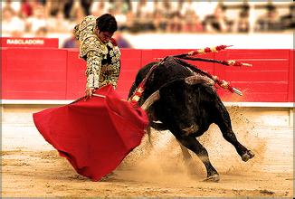
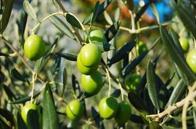

|
西班牙王国，位于欧洲西南部的伊布利亚半岛，面积50，4万平方公里，人口4000余万，是欧洲第三大国。西班牙的首都马德里，国家为罗马天主教，官方语言为卡斯蒂利亚语，原先的货币为比赛他。西班牙在1973年3月9日与我国建交。
西班牙的国名意思为野兔、边疆、海洋。西班牙被人们誉为“无雨之国”、“欧洲菜园”、“地中海陆地”、“旅游王国”、“海上强国”、“野兔国”、“永不沉没的航空舰”、“通往欧洲、非洲、中东和拉丁美洲的桥梁”、“橄榄王国”、“欧洲的果园”。

斗牛和弗拉门戈舞蹈是西班牙的两大国粹。前者是一种人与动物之间的竞技表演，以生命为赌注，充满着戏剧性。后者象征着一种极抽象的艺术，舞蹈者配合这狂烈的音乐，每一个举手投足，都强烈地把一种近乎原始人性的感情淋漓尽致地表达了出来，期间叫喊声此起彼伏，很容易使观众和舞者融为一体。

|